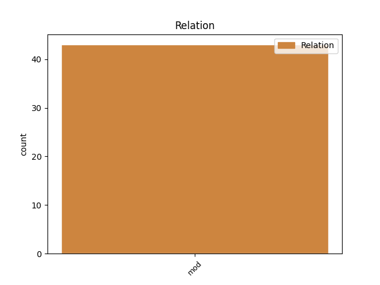
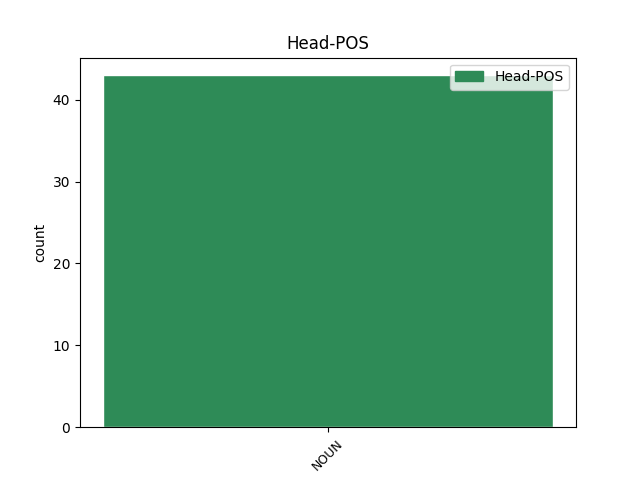
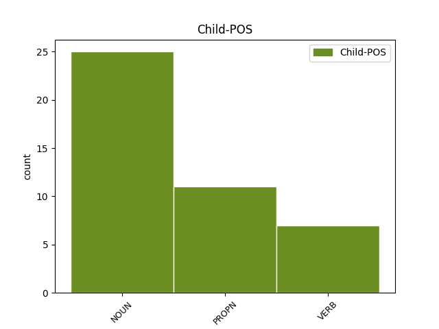

Distribution of features within this leaf



Agreement Rules sorted by frequency.
- When the dependent token is the modifer(mod) of the head token, and the head token is NOUN and the dependent token is NOUN.
1 Sumali _ _ _ _ 0 _ _ _
2 siya _ _ _ _ 0 _ _ _
3 sa _ _ _ _ 0 _ _ _
4 mga _ _ _ _ 0 _ _ _
5 patimpalak _ _ _ _ 0 _ _ _
6 sa _ _ _ _ 0 _ _ _
7 pagmomodelo _ _ _ _ 0 _ _ _
8 at _ _ _ _ 0 _ _ _
9 naging _ _ _ _ 0 _ _ _
10 aktibo _ _ _ _ 0 _ _ _
11 sa _ _ _ _ 0 _ _ _
12 CHECKMATE _ _ _ _ 0 _ _ _
13 at _ _ _ _ 0 _ _ _
14 sa _ _ _ _ 0 _ _ _
15 iba _ _ _ _ 0 _ _ _
16 pang _ _ _ _ 0 _ _ _
17 babasahing babasahing NOUN _ Definite=Ind|Gender=Neut|Number=Sing 0 _ _ _
18 pangmodelo pangmodelo NOUN _ Definite=Ind|Gender=Neut|Number=Sing 17 mod _ _
19 . _ _ _ _ 0 _ _ _
1 Pinaikot _ _ _ _ 0 _ _ _
2 ni _ _ _ _ 0 _ _ _
3 David _ _ _ _ 0 _ _ _
4 ang _ _ _ _ 0 _ _ _
5 panghulagpos _ _ _ _ 0 _ _ _
6 at _ _ _ _ 0 _ _ _
7 inasinta inasint NOUN _ Case=Dat|Gender=Masc|Number=Sing 0 _ _ _
8 si _ _ _ _ 0 _ _ _
9 Goliat Goliat PROPN _ Case=Nom|Gender=Masc|Number=Sing 7 mod _ _
10 . _ _ _ _ 0 _ _ _
1 Sa _ _ _ _ 0 _ _ _
2 kahilingang _ _ _ _ 0 _ _ _
3 ito _ _ _ _ 0 _ _ _
4 , _ _ _ _ 0 _ _ _
5 maaaring _ _ _ _ 0 _ _ _
6 sambitin _ _ _ _ 0 _ _ _
7 ng _ _ _ _ 0 _ _ _
8 isang _ _ _ _ 0 _ _ _
9 Kristiyano _ _ _ _ 0 _ _ _
10 ang _ _ _ _ 0 _ _ _
11 kanyang _ _ _ _ 0 _ _ _
12 pagtangis _ _ _ _ 0 _ _ _
13 , _ _ _ _ 0 _ _ _
14 at _ _ _ _ 0 _ _ _
15 sa _ _ _ _ 0 _ _ _
16 pamamagitan _ _ _ _ 0 _ _ _
17 nito _ _ _ _ 0 _ _ _
18 maaari _ _ _ _ 0 _ _ _
19 siyang _ _ _ _ 0 _ _ _
20 magsimula _ _ _ _ 0 _ _ _
21 , _ _ _ _ 0 _ _ _
22 magpatuloy _ _ _ _ 0 _ _ _
23 , _ _ _ _ 0 _ _ _
24 at _ _ _ _ 0 _ _ _
25 wakasan _ _ _ _ 0 _ _ _
26 ang _ _ _ _ 0 _ _ _
27 kanyang _ _ _ _ 0 _ _ _
28 dalangin _ _ _ _ 0 _ _ _
29 , _ _ _ _ 0 _ _ _
30 anuman _ _ _ _ 0 _ _ _
31 ang _ _ _ _ 0 _ _ _
32 suliraning suliraning NOUN _ Definite=Ind|Gender=Fem|Number=Sing 0 _ _ _
33 kinatatagpuan kinatatagpuan VERB _ Aspect=Perf|Definite=Ind|Degree=Pos|Gender=Fem|Number=Sing|VerbForm=Part|Voice=Pass 32 mod _ _
34 niya _ _ _ _ 0 _ _ _
35 sa _ _ _ _ 0 _ _ _
36 kanyang _ _ _ _ 0 _ _ _
37 sarili _ _ _ _ 0 _ _ _
38 . _ _ _ _ 0 _ _ _
Disagree Examples:
1 Ang _ _ _ _ 0 _ _ _
2 mga _ _ _ _ 0 _ _ _
3 compound _ _ _ _ 0 _ _ _
4 na _ _ _ _ 0 _ _ _
5 ito _ _ _ _ 0 _ _ _
6 ay _ _ _ _ 0 _ _ _
7 napapagana _ _ _ _ 0 _ _ _
8 sa _ _ _ _ 0 _ _ _
9 mga _ _ _ _ 0 _ _ _
10 selula _ _ _ _ 0 _ _ _
11 sa _ _ _ _ 0 _ _ _
12 pagiging pagiging NOUN _ Case=Dat|Gender=Fem|Number=Sing 0 _ _ _
13 nakonberte nakonberte NOUN _ Definite=Ind|Gender=Neut|Number=Sing 12 mod _ _
14 sa _ _ _ _ 0 _ _ _
15 mga _ _ _ _ 0 _ _ _
16 nukleyotida _ _ _ _ 0 _ _ _
17 . _ _ _ _ 0 _ _ _
1 Ang _ _ _ _ 0 _ _ _
2 pagkabahala _ _ _ _ 0 _ _ _
3 sa _ _ _ _ 0 _ _ _
4 epekto _ _ _ _ 0 _ _ _
5 ng _ _ _ _ 0 _ _ _
6 aerosol _ _ _ _ 0 _ _ _
7 sa _ _ _ _ 0 _ _ _
8 pagbabago _ _ _ _ 0 _ _ _
9 sa _ _ _ _ 0 _ _ _
10 klimang klima NOUN _ Definite=Def|Gender=Masc|Number=Sing 0 _ _ _
11 pangmundo pangmundo NOUN _ Definite=Ind|Gender=Neut|Number=Sing 10 mod _ _
12 ay _ _ _ _ 0 _ _ _
13 unang _ _ _ _ 0 _ _ _
14 sinaliksik _ _ _ _ 0 _ _ _
15 bilang _ _ _ _ 0 _ _ _
16 pagkabahala _ _ _ _ 0 _ _ _
17 sa _ _ _ _ 0 _ _ _
18 pandaigdigang _ _ _ _ 0 _ _ _
19 paglamig _ _ _ _ 0 _ _ _
20 noong _ _ _ _ 0 _ _ _
21 mga _ _ _ _ 0 _ _ _
22 taong _ _ _ _ 0 _ _ _
23 1970 _ _ _ _ 0 _ _ _
24 . _ _ _ _ 0 _ _ _
1 Ang _ _ _ _ 0 _ _ _
2 Sura _ _ _ _ 0 _ _ _
3 Yunus _ _ _ _ 0 _ _ _
4 ( _ _ _ _ 0 _ _ _
5 Arabiko _ _ _ _ 0 _ _ _
6 : _ _ _ _ 0 _ _ _
7 سورة _ _ _ _ 0 _ _ _
8 يونس _ _ _ _ 0 _ _ _
9 , _ _ _ _ 0 _ _ _
10 Sūratu Sūrata PROPN _ Case=Gen|Gender=Fem|Number=Sing 11 mod _ _
11 Yūnus yūnus NOUN _ Case=Nom|Gender=Masc|Number=Sing 0 _ _ _
12 , _ _ _ _ 0 _ _ _
13 Jonas _ _ _ _ 0 _ _ _
14 ) _ _ _ _ 0 _ _ _
15 ang _ _ _ _ 0 _ _ _
16 ika-10 _ _ _ _ 0 _ _ _
17 kabanata _ _ _ _ 0 _ _ _
18 ng _ _ _ _ 0 _ _ _
19 Koran _ _ _ _ 0 _ _ _
20 na _ _ _ _ 0 _ _ _
21 may _ _ _ _ 0 _ _ _
22 109 _ _ _ _ 0 _ _ _
23 talata _ _ _ _ 0 _ _ _
24 . _ _ _ _ 0 _ _ _
1 Bagamat _ _ _ _ 0 _ _ _
2 maraming maraming NOUN _ Definite=Ind|Gender=Masc|Number=Sing 0 _ _ _
3 haka haka NOUN _ Definite=Ind|Gender=Fem|Number=Sing 2 mod _ _
4 - _ _ _ _ 0 _ _ _
5 haka _ _ _ _ 0 _ _ _
6 sa _ _ _ _ 0 _ _ _
7 pagtanggi _ _ _ _ 0 _ _ _
8 ni _ _ _ _ 0 _ _ _
9 Samardzija _ _ _ _ 0 _ _ _
10 sa _ _ _ _ 0 _ _ _
11 NFL _ _ _ _ 0 _ _ _
12 , _ _ _ _ 0 _ _ _
13 madami _ _ _ _ 0 _ _ _
14 din _ _ _ _ 0 _ _ _
15 ang _ _ _ _ 0 _ _ _
16 nagsabi _ _ _ _ 0 _ _ _
17 na _ _ _ _ 0 _ _ _
18 mapapabilang _ _ _ _ 0 _ _ _
19 siya _ _ _ _ 0 _ _ _
20 sa _ _ _ _ 0 _ _ _
21 2007 _ _ _ _ 0 _ _ _
22 NFL _ _ _ _ 0 _ _ _
23 Draft _ _ _ _ 0 _ _ _
24 . _ _ _ _ 0 _ _ _
1 Ginagawa _ _ _ _ 0 _ _ _
2 ng _ _ _ _ 0 _ _ _
3 tao _ _ _ _ 0 _ _ _
4 ang _ _ _ _ 0 _ _ _
5 pagbabasa pagbabasa NOUN _ Definite=Ind|Gender=Neut|Number=Sing 0 _ _ _
6 ng _ _ _ _ 0 _ _ _
7 mga _ _ _ _ 0 _ _ _
8 babasahin _ _ _ _ 0 _ _ _
9 dahil _ _ _ _ 0 _ _ _
10 sa _ _ _ _ 0 _ _ _
11 mga _ _ _ _ 0 _ _ _
12 sumusunod _ _ _ _ 0 _ _ _
13 na _ _ _ _ 0 _ _ _
14 mga _ _ _ _ 0 _ _ _
15 dahilan dahilan NOUN _ Definite=Ind|Gender=Fem|Number=Plur 5 mod _ _
16 : _ _ _ _ 0 _ _ _
17 ang _ _ _ _ 0 _ _ _
18 pagbabasa _ _ _ _ 0 _ _ _
19 upang _ _ _ _ 0 _ _ _
20 malibang _ _ _ _ 0 _ _ _
21 , _ _ _ _ 0 _ _ _
22 ang _ _ _ _ 0 _ _ _
23 pagbabasa _ _ _ _ 0 _ _ _
24 para _ _ _ _ 0 _ _ _
25 sa _ _ _ _ 0 _ _ _
26 kabatiran _ _ _ _ 0 _ _ _
27 , _ _ _ _ 0 _ _ _
28 ang _ _ _ _ 0 _ _ _
29 pagbabasa _ _ _ _ 0 _ _ _
30 para _ _ _ _ 0 _ _ _
31 sa _ _ _ _ 0 _ _ _
32 pakikipagsapalaran _ _ _ _ 0 _ _ _
33 , _ _ _ _ 0 _ _ _
34 at _ _ _ _ 0 _ _ _
35 ang _ _ _ _ 0 _ _ _
36 pagbabasa _ _ _ _ 0 _ _ _
37 para _ _ _ _ 0 _ _ _
38 sa _ _ _ _ 0 _ _ _
39 pagkamulat _ _ _ _ 0 _ _ _
40 . _ _ _ _ 0 _ _ _